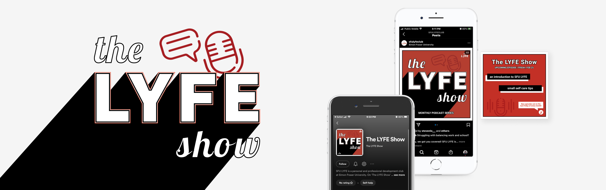
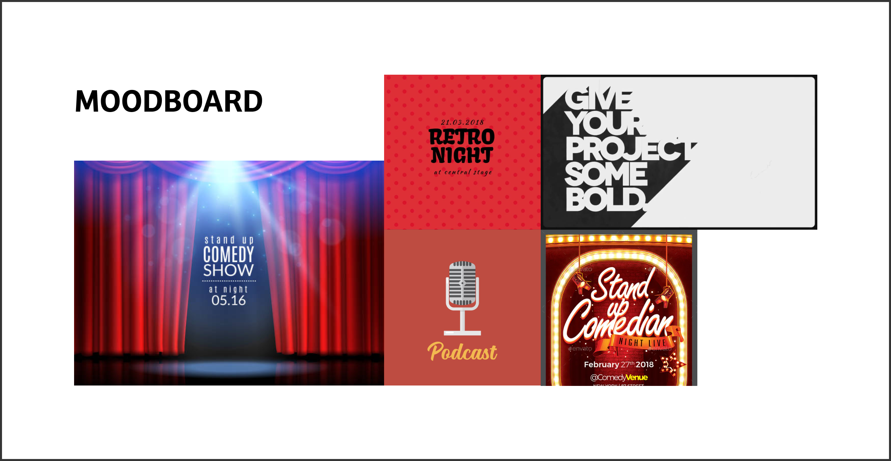
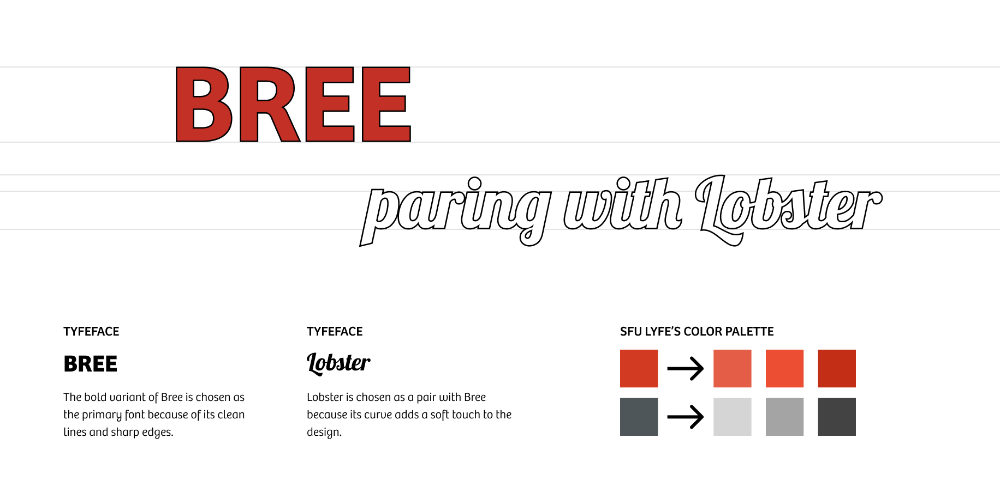
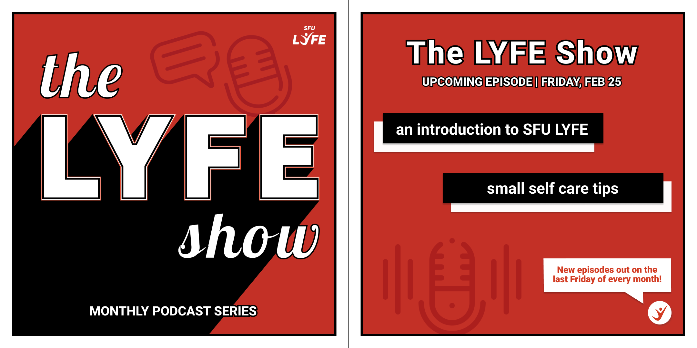
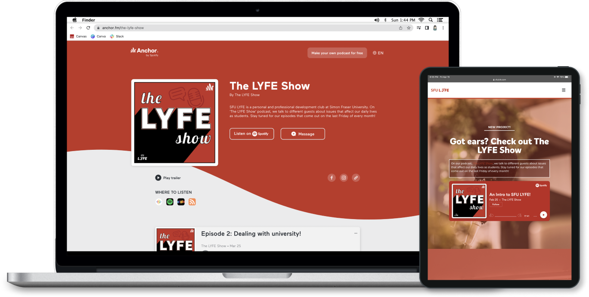

The LYFE Show
Graphic Design / Visual Design / Volunteer
A monthly podcast series produced by students from SFU. Different guests are invited to talk about issues that affect our daily lives as students.

×

My Role
- Graphic Designer
- Visual Designer
Team
- Lacie Nguyen
Duration
- 1 week
Project Overview
The LYFE Show is an inspirational podcast series where current and former SFU students share the lessons they've learned. The project launched in the spring of 2022 through SFU LYFE, a student-centered personal and professional development platform. I was responsible for designing the podcast cover and promotional graphics for the podcast.
Art Direction
As the podcast named “The LYFE Show”, I wanted to implement the design of a retro stage. For young and ambitious future leaders, this retro approach sparks their potential inspiration and passion by exploring vibrant colours and bold typography.
Ideation
I started the process by sketching and exploring different ways to replicate the feeling of a retro show in the design. Most of the sketches are heavily influenced by the Swiss design approach, which has large typography for the readability of small podcast previews on mobile devices.

Concept Refinement
After discussing with the marketing team, sketch 5 from the ideation was chosen because of its simplicity. One change I made was simplifying the graphical elements by changing the stars to the podcast icon. Therefore, the audiences can immediately tell this is a podcast by looking at the cover both on streaming platforms or on social media.
Implementation
Besides the podcast cover, I also need to design a promotional post on social media for it. I decide to reuse the podcast cover as the main page so the audiences can know and easily recognize the podcast when they find it on streaming platforms.
Reflection
The most interesting part of this project is learning to design for different media. Before doing this project, I only have experience in designing social media posts and printed products so designing a podcast cover is a new experience for me. I was able to research the dimension of podcast cover in different streaming platforms like Spotify or Apple Podcast as well as what should be included in a podcast cover.
